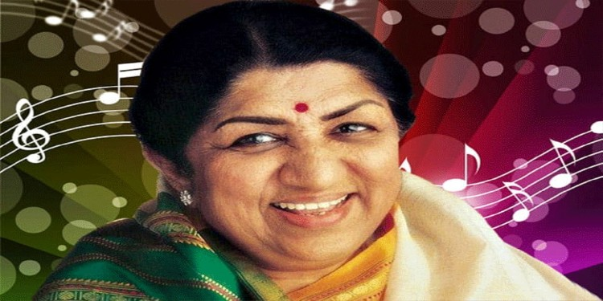

ABOUT
Born: 28 September 1929, Indore
Died: 6 February 2022, Breach Candy Hospital Trust, Mumbai
Awards: Bharat Ratna, Filmfare Lifetime Achievement Award etc.
Parents: Deenanath Mangeshkar, Shevanti Mangeshkar
Nominations:Filmfare Award for Best Female Playback Singer
